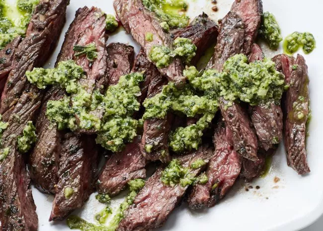

Marinated Skirt Steak

The best slab of meat you'll have all year!
Is there anything in this world that goes together than meat and beer? there
isnt quite like anything than a nice hot summer day, family, grilled meat
and copious amounts of alcohol to wash it all down! This marinated skirtsteak
steak pairs beautifully with grilled vegetables or is great all on its own!
The soy sauce adds extra dimension to the beef flavor and makes everything sing
Ingrediants
- Grass fed skirt steak
- 2 bottles of soy sauce
- Adobo seasoning
- Fresh garlic
- Duck sauce
- Teriyaki sauce
- Salt, pepper, canola oil
Steps
- First, get a large ziplock bag and place the trimmed skirt steak inside
- Next, combine all the marinade ingreadiants in the bag, and mix around
with your hands
- Close the bag and allow meat the marinate refrigerated for up to 12 hours
- When ready to cook, preheat grill to as hot as you can get it for at least 20 minutes
- When grill is hot enough, cook the skirt steak for approximately 3-4 minutes per side
for a perfect medium rare
- Allow meat to rest for at least 5 minutes and slice against the grain
- Enjoy!!